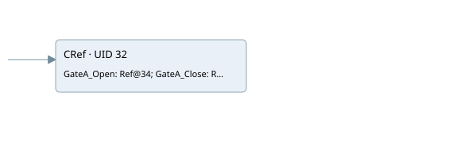

pv01
hmi · 검색 색인 순서 38 · 원본 내부 NID 추정 None
백업 PLF 원본의 2975859 바이트 위치에서 복원한 XML. 검색 문서 1215의 객체 키 161022004017000000000000와 연결했다. 이름 해석 0/20개. 남은 RefId는 상수 또는 미해석 참조다.
연결 구조 다시 그리기
원본 Part/PCon/Wire를 이용한 연결도다. TIA 화면의 래더 배치 또는 실행 결과를 재현한 그림은 아니다. 핀 연결은 아래 표와 원본 XML을 기준으로 읽는다. 노드 위에 마우스를 두면 피연산자 이름을 볼 수 있다.

접점·코일·블록과 피연산자
| Part UID | Gate | Negated 핀 | 연결 피연산자 |
|---|---|---|---|
| 32 | CRef | 호출 참조: RefId 716; GateA_Open = RefId 717 / ORef UID 34; GateA_Close = RefId 718 / ORef UID 36; GateB_Open = RefId 719 / ORef UID 38; GateB_Close = RefId 720 / ORef UID 40; Selector_GateA = RefId 721 / ORef UID 42; Selector_GateB = RefId 722 / ORef UID 44; Allarm1 = RefId 723 / ORef UID 46; Allarm2 = RefId 724 / ORef UID 48; Allarm3 = RefId 725 / ORef UID 50; Allarm4 = RefId 726 / ORef UID 52; Allarm5 = RefId 48 / ORef UID 54; Allarm6 = RefId 48 / ORef UID 56; Allarm7 = RefId 48 / ORef UID 58; HMI_GateA_Open = RefId 728 / ORef UID 60; HMI_GateA_Close = RefId 727 / ORef UID 62; HMI_GateB_Open = RefId 729 / ORef UID 64; HMI_GateB_Close = RefId 730 / ORef UID 66; HMI_Selector_GateA = RefId 731 / ORef UID 68; HMI_Selector_GateB = RefId 732 / ORef UID 70; Total_Allarms = RefId 733 / ORef UID 72 |
접점 경로를 펼친 조건식
Contact·O/A·비교기의 원본 연결을 읽기 쉽게 펼친 보조 해석이다. POWER는 전원 레일 시작을 뜻한다. 호출 블록·에지·타이머의 내부 동작과 다중 쓰기 순서는 이 표로 실행 검증하지 않았다. 미해석 핀과 RefId는 원문 연결표에서 확인한다.
| UID | 동작 | 대상 | 원본 접점 경로 | 내용 |
|---|
원본 배선 연결
| Wire UID | 동일 Wire 연결 끝점 |
|---|---|
| 21 | Powerrail {} ↔ Part 32.en |
| 33 | ORef 34 (RefId 717) ↔ Part 32.GateA_Open |
| 35 | ORef 36 (RefId 718) ↔ Part 32.GateA_Close |
| 37 | ORef 38 (RefId 719) ↔ Part 32.GateB_Open |
| 39 | ORef 40 (RefId 720) ↔ Part 32.GateB_Close |
| 41 | ORef 42 (RefId 721) ↔ Part 32.Selector_GateA |
| 43 | ORef 44 (RefId 722) ↔ Part 32.Selector_GateB |
| 45 | ORef 46 (RefId 723) ↔ Part 32.Allarm1 |
| 47 | ORef 48 (RefId 724) ↔ Part 32.Allarm2 |
| 49 | ORef 50 (RefId 725) ↔ Part 32.Allarm3 |
| 51 | ORef 52 (RefId 726) ↔ Part 32.Allarm4 |
| 53 | ORef 54 (RefId 48) ↔ Part 32.Allarm5 |
| 55 | ORef 56 (RefId 48) ↔ Part 32.Allarm6 |
| 57 | ORef 58 (RefId 48) ↔ Part 32.Allarm7 |
| 59 | Part 32.HMI_GateA_Open ↔ ORef 60 (RefId 728) |
| 61 | Part 32.HMI_GateA_Close ↔ ORef 62 (RefId 727) |
| 63 | Part 32.HMI_GateB_Open ↔ ORef 64 (RefId 729) |
| 65 | Part 32.HMI_GateB_Close ↔ ORef 66 (RefId 730) |
| 67 | Part 32.HMI_Selector_GateA ↔ ORef 68 (RefId 731) |
| 69 | Part 32.HMI_Selector_GateB ↔ ORef 70 (RefId 732) |
| 71 | Part 32.Total_Allarms ↔ ORef 72 (RefId 733) |
식별자 해석 근거 20개
| ORef UID | RefId | 이름 | IdentXmlPart 파일 | 해석 방법 |
|---|---|---|---|---|
| 34 | 717 | 미해석 RefId | 식별 선언 원본 참조 | 미해석 |
| 36 | 718 | 미해석 RefId | 식별 선언 원본 참조 | 미해석 |
| 38 | 719 | 미해석 RefId | 식별 선언 원본 참조 | 미해석 |
| 40 | 720 | 미해석 RefId | 식별 선언 원본 참조 | 미해석 |
| 42 | 721 | 미해석 RefId | 식별 선언 원본 참조 | 미해석 |
| 44 | 722 | 미해석 RefId | 식별 선언 원본 참조 | 미해석 |
| 46 | 723 | 미해석 RefId | 식별 선언 원본 참조 | 미해석 |
| 48 | 724 | 미해석 RefId | 식별 선언 원본 참조 | 미해석 |
| 50 | 725 | 미해석 RefId | 식별 선언 원본 참조 | 미해석 |
| 52 | 726 | 미해석 RefId | 식별 선언 원본 참조 | 미해석 |
| 54 | 48 | 미해석 RefId | 식별 선언 원본 참조 | 미해석 |
| 56 | 48 | 미해석 RefId | 식별 선언 원본 참조 | 미해석 |
| 58 | 48 | 미해석 RefId | 식별 선언 원본 참조 | 미해석 |
| 60 | 728 | 미해석 RefId | 식별 선언 원본 참조 | 미해석 |
| 62 | 727 | 미해석 RefId | 식별 선언 원본 참조 | 미해석 |
| 64 | 729 | 미해석 RefId | 식별 선언 원본 참조 | 미해석 |
| 66 | 730 | 미해석 RefId | 식별 선언 원본 참조 | 미해석 |
| 68 | 731 | 미해석 RefId | 식별 선언 원본 참조 | 미해석 |
| 70 | 732 | 미해석 RefId | 식별 선언 원본 참조 | 미해석 |
| 72 | 733 | 미해석 RefId | 식별 선언 원본 참조 | 미해석 |
검색 코드 보조 자료
참조 명칭을 찾기 위한 자료이며 실행 순서나 AND/OR 관계는 위 연결표로 확인한다.
"hmi pv_2gate" "inputs"."fc gate a open" "inputs"."limit switch ls-02gate a closedvalve pv-01" "inputs"."pv-01 gate b open" "inputs"."limit switch ls-06gate b closedvalve pv-01" "inputs"."selector op gate a pv-01" "inputs"."selector op gate b pv-01" "allarm".pv_01_gate_a_not_close "allarm".pv_01_gate_a_not_open "allarm".pv_01_gate_b_not_close "allarm".pv_01_gate_b_not_open false false false "motors".pv_01.ls_gate_a_open "motors".pv_01.ls_gate_a_close "motors".pv_01.ls_gate_b_open "motors".pv_01.ls_gate_b_close "motors".pv_01.selector_gatea "motors".pv_01.selector_gateb "motors".pv_01.comulativo_allarmi